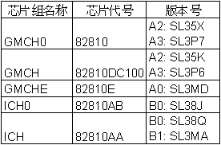
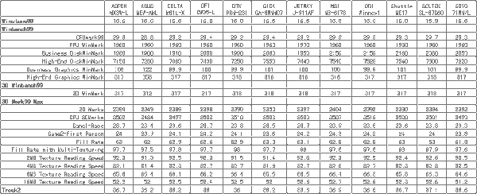

|
|
| 当前位置：电脑报电子版 > 1999 年 > 39 期 > 评测与市场 > 风起云涌810（上篇）——８１０主板横向测试 |
| 《 风起云涌810（上篇）——８１０主板横向测试 》 |
| Intel82810主板芯片组已经推出了相当长的一段时间，不过在进入市场的过程中却并非一帆风顺，众多的主板生产厂商也没有全力推广这一产品。其中的原因主要是整合了3D显示系统的810主板在3D图形方面确实和主流的3D加速卡有较大的性能差距，而且它并没有提供AGP插槽，限制了用户的选择空间。其次，810的初衷是和赛扬搭配，提供低价位的解决方案，所以较早的810芯片组和奔腾Ⅲ的SSE指令集有冲突。并且810最初为Socket370架构而设计，转换为Slot1后问题也不少。种种因素综合起来，使810在国内DIY市场并不热销，厂商也不敢全力推广。不过810终究是Intel现阶段的主力产品，BX芯片组已日渐缺货，820芯片组又推迟发售，早期810主板的种种问题几乎都已经得到了解决，各主板厂商的810主板也都纷纷就绪，810主板很快会成为市场上的主流之一。本报评测室集合了20多款810主板，为读者做一次横向比较测试。
测试方案简介 810芯片组的体系结构方面的基本知识已经多次见诸报端,这里不再赘述。810芯片组有3个版本，A1版的芯片是工程样品，没有在正式生产的主板中使用，前一段时间闹得沸沸扬扬的奔腾Ⅲ SSE指令集错误的是A2版本，A3版是刚推出的最新版，已经修正了这一Bug。有关A2版芯片的Bug，因为牵涉到奔腾Ⅲ的SSE指令集，所以对Socket 370架构的主板来说，并不是问题。由于现在使用SSE指令集的软件很少，笔者四处收集资料，也没有发现哪个软件被证实确实会死机，不过当SSE大行其道的时候这也有可能成为隐患。 本次测试将810主板分为集成显示Cache和不集成显示Cache的两类。这两类主板在3D性能方面有比较明显的差异,所以本次测试不在两类之间进行互相比较。在本期的上篇中,我们将向大家介绍没有集成显示Cache的产品。 由于810主板集成了显卡和声卡,在选择测试平台的配件时比较简单,以下是不集成显示Cache的810测试平台的配置: CPU:赛扬366 内存:64MB SEC －GH 硬盘:Fireball CR 8.4GB 显卡:主板集成 声卡:主板集成 系统:Windows98 SE 测试硬盘分为两个区,主分区6.4GB,安装操作系统,测试软件和必要的驱动程序,第二分区没有使用。 测试主要通过ZD实验室的BenchMark软件来体现主板的性能,我们还运行了3DMark99来进一步测试主板的3D性能,并选择3D游戏——Trouk2来测试整合的3D显卡在游戏方面的性能。每一款样品都将整个测试重复运行了3次。如果3次测试的分数都是有效数据，则取中间的一次作为最后的测试成绩。 因为810已经集成了显卡和声卡，兼容性测试就主要集中于内存方面，我们使用了LGS－7J、SEC、HY、Hitach和“金条”。 参测样品简评 从我们运行的游戏Trouk2的平均帧数来看，不集成显示Cache的810主板似乎玩3D游戏还不错，其实并非如此。首先，Trouk2和Quake3、Unreal等3D游戏不同，它对配置的要求比较低，其次，36帧/秒左右的速度是指测试的平均帧数，当场景复杂、运动剧烈时，游戏画面停顿明显，达不到30帧/秒的水平。对于3D游戏来说，不集成显示Cache的810可以休矣。 810主板的兼容性已经大有改善。但是LGS－7J的内存仍然不能使用，其它的内存条都没有问题。另外，双插槽主板的Slot1插槽兼容性稍差，但Socket 370插座一切正常。 (下列样品按品牌名称英文字母顺序排列) 建基MX3W－L 建基MX3W－L是一块i810L主板，支持UltraDMA/33模式，MicroATX结构，支持Socket370赛扬CPU。这块主板提供3条PCI和2条DIMM槽，是i810主板的标准规格。从做工来看，这块主板贴片元件整齐，PCB板洗得很干净，用料也不错。 结构方面，MX3W－L的布局比较与众不同，它的软驱接口位于AMR插槽旁边，和AMR插槽平行，连接时软驱线要跨过整个主板。DIMM、IDE和电源接口的位置设计得很好，间距合适，安装很方便。另外，MX3W－L的GMCH0芯片上用双面胶安装了散热片。功能方面，MX3W－L很齐备，它支持风扇监控、系统电压监控、ACPI功能、红外传输等功能，I/O接口符合PC99规范。这块主板设计有过流保护电路，并采用自复式保险，防止瞬间电流过大时主板烧掉。它还在内存插槽旁边设计有一个LED指示灯，显示主板是否处于通电状态。 MX3W－L的附件包括串口连线、DMA/33数据线和软驱线各一条，属于标准配置。它的说明书是一本快速安装指南，包括中文版本，内容较简单，但MX3W－L的驱动光盘，还赠送Norton AntiVirus防毒软件，附加值较大。 华硕MEW－AML MEW－AML是一块非常有“个性”的MicroATX主板，但要比普通MicroATX宽出很多，几乎成正方型，提供4条PCI插槽和2条DIMM插槽。这块主板的做工很好，用料十足，在过流保护方面特别下了工夫。唯一遗憾的是PCB板摸上去有一点粘手。 结构方面，MEW－AML也很有特色，它的IDE接口和电源插座的位置都显得与众不同，各部分布局位置非常特殊，且间距较大，有利于减少干扰。在主板的上角，除了AC｀97声卡的CODEC芯片，还有另一颗PCI声卡芯片。 MEW－AML的功能非常齐全，它的BIOS是由华硕公司专门编写的，与常见的AwardBIOS在界面和内容上都有很大不同，这对提高主板的性能和兼容性非常重要。这块主板还集成了一块Caystal的32bit声卡芯片，提供更好的音效。其他如ACPI、UltraDMA66等功能，MEW－AML也有提供。它的频率设置通过主板上的跳线来完成，可以使用SDRAM异步工作方式。 性能方面，MEW－AML的资料表明，使用华硕自己的显示驱动程序可以提高高端图形性能12％MEW－AML的附件包括80pin、40pin硬盘线、软驱线和COM2连线各一条，还包括3颗备用的跳线。用户手册比较详细，可惜仍然只有英文版。MEW－AML的驱动光盘特别出色，结构分明，内容也很充实。除了驱动程序、Trend PC－cillin和Adobe Acrobat Reader外，还有华硕专用的系统应用工具，附加值很大。 台达M81L－X M81L－X是一块同时支持Socket370和Slot1架构CPU的主板，提供4条PCI插槽和2条DIMM插槽，做工方面还不错，整个板子显得很整洁。 结构方面，M81L－X采用正统的布局方式，除了有两个CPU插座外，其它的布置和常见的BX主板基本相同。这块主板的GMCH0芯片上用双面胶粘有散热片，电源和指示灯接口虽然布局比较特殊，但标示明显，安装没有问题。另外，它的声卡CODEC部分并没有采用常见的AD1881芯片，而是采用了一颗Crastal的芯片。 功能方面，M81L－X支持UltraDMA/33，也包括有ACPI、系统监控等功能，同时提供两组通用接口，用户可以根据不同需要连接USB Hub或IrDA红外传输设备。主板上已经集成了蜂鸣器和电源指示灯，方便用户了解主板的状况。 M81L－X的附件包括40pin硬盘线、软驱线和COM连线各一条，并且有中文使用手册，内容详尽，阅读很方便。它的驱动光盘内容较少，主要是各款产品的驱动程序，以及一个台达的硬件诊断程序，附加值较小。 DFI CW35－L DFI CW35－L是一块支持UltraDMA/33的MicroATX主板，Socket370架构，提供3条PCI和2条DIMM插槽。这块主板的做工是本次参测样品中较好的之一，洗板和贴片都很好，容易折断的晶振也用凝胶固定了起来。在过流保护和接地方面，CW35－L考虑得特别周到。 结构方面。CW35－L没有什么特殊的地方，它的开关和指示灯接脚采用单排线设计，并且向主板折叠90度，标示明显，安装非常方便。 功能方面，CW35－L提供了系统监控、ACPI、红外传输、DMI（桌面管理界面）等齐全的功能，并且有3个不同的CD音频输入接口，适用于不同CD机，兼容性更好。它还在BIOS芯片和DIMM插槽旁边各有1个LED指示灯，分别显示主板是否通电和系统处于挂起或运行模式，提醒用户不要带电插拔设备。 CW35－L的附件包括串口连线、40pin的IDE连线和软驱线，以及1本详细的中文使用手册。这本说明书对主板功能介绍和安装指南很详细，但缺少故障排除和F＆Q。驱动光盘的内容以Driver为主，附有DFI两款810产品的资料，界面不够美观，但层次清楚，一目了然。 创宏PRM－231 PRM－231是一块Milro ATX规格的主板，Socket 370架构，提供3条PCI2条DIMM插槽，支持Ultra DMA/33。这块主板的工艺比较一般，一些元件插得不甚整齐，直立式电容分布较散，不过跳线和风扇插座位置很好。它在过流保护方面考虑比较周到。 结构方面，PRM－231的布置比较标准，在AMR插槽的后边留有一个ES1373声卡芯片的空位。DTK另有产品集成了这款声卡，这块主板的外部I/O接口符合PC99规范。 PRM－231没有什么显著的特点，据有标准的810L主板功能，支持ACPI、系统监控、红线传输等功能。 这块主板的附件包括硬盘线、软驱线和Com口连线各一条。它的驱动光盘没有什么特色，提供的说明资料也较少，只有一张薄薄的说明书，对道通用户来说，安装时比较麻烦。 技嘉 GA－6WMMC7 GA－6WMMC7是一块Socket370架构的i810L主板，MacroATX结构，支持UltraDMA/33模式，除了提供810L主板标准的3PCI＋2DIMM＋1AMR的扩展槽外，这块主板还提供一条TV/DFP连接槽。GA－6WMMC7的工艺很漂亮，贴片元件很整齐，线圈卧式安装，晶振用凝胶固定，并且采用了较少见的1200μF和330μF电容，不过PCB板摸上去有一点粘。 GA－6WMMC7结构比较标准，比较特别的是在AMR插槽的旁边有有1条34pin的白色插槽（和软驱接口很像），用来连接TV－Out和数字式显示面板扩展卡。GA－6WMMC7的电源和指示灯接口标示不太清楚，普通用户可能会不明白。 在功能方面GA－6WMMC7比较有特色，除了常见的ACPI、系统监控、红外传输等功能外，它还支持TV－Out和数字式显示面板，不过要单独购买扩展卡，主板上有一个蜂鸣器，自检时会发声，还有一颗LCD显示主板的不同状态。 GA－6WMMC7的附件比较简单，包括IDE和软驱连线各1条，不过没有提供没有COM2口。它的说明书和包装都使用中文，说明书很详细，比较容易读懂。驱动光盘附送Trend PC－cillin Ver4。02和Adobe Acrobat Reader Ver3。01两个软件和DirectX6。1，不过界面比较简单，内容也不算丰富。 捷波J－911AF J－911AF是一块ATX结构810主板，支持UltraDMA/66，比较有特点的是它同时支持Socket370和Slot1架构的CPU。这块主板提供4PCI＋2DIMM的扩展槽。J－911AF的元件贴片还不错，但做工和用料都比较普通。对于过流保护和接地方面也没有特别设计。 结构方面，J－911AF同时采用了Socket370插座和Slot1插槽，支持Socket370赛扬、奔腾Ⅱ和奔腾Ⅲ。它的IDE和FDD接口与PCI插槽平行，和传统布局呈90度角，DIMM插槽位于主板边缘。它的电源和指示灯接口比较靠后，Power脚是独立的，很特别。 功能方面，J－911AF没有什么独特的设定，但810主板正常的ACPI、系统管理和AMR等功能都有提供，比较齐全。 J－911AF的附件包括80pin硬盘线、软驱线和COM2口线各一条。它的说明书使用英文，附图偏小。驱动光盘也显得比较简单，没有精灵界面，不过子目录结构还是很清楚，并且附送了Highpoint Xstore Pro IDE Driver。 微星MS－6178 MS－6178是一块支持UltraDMA/66的i810主板，Socket370架构，提供有3条PCI、2条DIMM和AMR插槽，除此外，还有一条PTI（Panel link/TV－Out Interface）扩展槽。做工方面，这块主板也属一流水准，洗板和贴片都无可挑剔，使用了1500μF的大电容，并且在接地和过流保护上下了较大工夫，在主板的PS/2接口旁边可以看到一颗自复式保险。 结构方面，MS－6178比较有特点的地方是它的PTI扩展槽和AMR槽位于一条直线上，PTI靠内而AMR靠外。它的3个分别用于CD－ROM、DVD－ROM和Modem的音频输入接口用不同颜色的塑料基座区分。这块主板也集成了一个蜂鸣器，开关和指示灯接口标示比较明显，GMCH0芯片用塑料钉固定有散热片。不过MS－6178只有一个CPU风扇插座。 MS－6178的功能主要包括系统监控、ACPI、红外传输等，还支持UltraDMA/66硬盘，用户如果需要使用PTI和AMR功能，微星公司也有专用的相应扩展卡提供。它的BIOS中还有“CPU Plug ＆ Play Ⅲ” MS－6178的附件包括80pin、40pin硬盘线、软驱线和COM2接口各一条。它的用户手册编写得很详细，不过是使用的英文。MS－6178的驱动光盘界面结构非常明晰，内容也很充实，包括附送的Trend PC－cillin防毒软件、Adobe Acrobat Reader和微星特有的大量应用软件等，附加值很大。 QDI Winnex1 QDI Winnex1是一块标准的MicroATX主板，Socket370架构，支持UltraDMA/33模式。这块i810L主板提供2条PCI、2条DIMM插槽和1条AMR插槽。做工方面，QDI Winnex1属中上水准，元件贴得不错，板也洗得干净，易折的晶振用铁丝固定，但有几处镀层不均匀，接地部分比较弱。 结构方面，Winnex1采用标准设计，它的电源插座位于主板边缘，安装很方便，电源和指示灯接脚也是单排线，标示分明，一目了然。这块主板的GMCH0芯片用胶粘上了散热片，非常牢，不能拔下来，它的外部I/O接口符合PC99规范。 Winnex1提供810主板的标准功能，包括高级电源管理、红外传输、系统监控等，在主板的正中间，有一颗红色的电源指示灯，显示主板是否处于通电状态，ICH0芯片傍边设计有一颗跳线，可以禁止BIOS写入。它的BIOS提供独特的CPU SpeedEasy项，调整系统频率很方便。 Winnex1的附件包括两条40pin的IDE连线、1条软驱线和串口线，比较特殊的是这块主板还提供了一块I/O接口挡板和一颗备用的跳线，挡板做工非常精致，挡板上对各I/O接口有明显的标示。Winnex1的说明书内容详尽，不过可能是因为QDI主要市场在欧美的原因，说明书用的是英文，仅有BIOS频率设定一段中文说明。Winnex1的驱动光盘采用Web方式，中文界面，结构清晰，使用很方便。 浩鑫ME17 ME17采用MicroATX结构，支持Socket370赛扬，支持Ultradma/66硬盘。它除了提供有3条PCI、2条DIMM插槽和AMR插槽外，还有一条UPT插槽。做工方面，这块主板非常有特色，四个角都切成了圆弧型，贴片整齐，PCB板也洗得很干净，用料更是参测样品中数一数二的一块，总共用了将近30颗1000μF的直立电容，还使用了不少钽电容。ME17在接地方面也做得很充分。 ME17的结构比较特殊，IDE接口是正常布局，而FDD接口平行于PCI插槽，在PCI1的顶端呈一直线的是UPT扩展槽。它的电源插座太靠近DIMM插槽。另外，这块主板上的跳线都带有“尾巴”，插拔方便，非常体贴用户。由于直立式电容太多，这块主板外观上显得不够整洁。 功能方面，除了810主板标准的ACPI、系统监控、UltraDMA/66等，ME17的UPT扩展功能是一大特色，它可以支持Panel link/TV－OUT外，还可以用来连接USB Hub。并且，它提供了3个fans插座，这在MicroATX主板中是相当少见的。 ME17的附件包括1条80pin的硬盘线、1条软驱线和COM2口连接线。它的说明书编写得比较详细，但附图较小，且是英文版本，看上去比较吃力。ME17的驱动光盘界面比较简单，除了Driver还包括Adobe Acrobat Reader和主板的用户手册，附加值较小。 硕泰克SL－67G60 这块主板使用了最新的A3版芯片组，是一块Slot架构的ATX主板，支持UltraDMA/66，提供有5条PCI插槽和2条DIMM插槽。SL－67G60的做工不错，元件贴片和洗板都很好，用料也足，在重要部位采用了BET电感和钽电容，对稳定性和过流保护花了较多心思。 SL－67G60的结构没有特别的地方，布局中规中矩。它的Slot1卡座采用了蓝色透明塑料，比较特别，实际使用中没有什么特别的意义。 功能方面，SL－67G60提供有标准的ACPI、系统监控、红外传输等。另外，它支持UltraDMA/66传输模式。 SL－67G60的附件的附件比较齐全，包括80pin硬盘线、软驱线和COM连接线各1条，还有1条40cm长的探温线。它的中文使用手册BIOS设定部分很详细，安装部分较弱。驱动光盘界面简单，没有精灵界面，内容相当充实，包括有硕泰克产品的信息等。另外，SL－67G60附送Norton Ghost和AntiVirus两个软件，以及中英文说明手册，非常实用，附加价值很大。 梅捷 SY－7IWM/L SY－7IWM/L采用MicroATX结构，支持Socket370架构的CPU，扩展槽包括3条PCI＋3条DIMM＋AMR。SY－7IWM/L的做工很好，PCB板和贴片元件都很漂亮，用料也很足，主板上有多颗1000μF和1500μF的大电容。唯一令人遗憾的地方是主板上电容的引脚留得长了一点。 结构方面，SY－7IWM/L是参测样品中唯一提供3条DIMM插槽的MicroATX主板，不过最大内存容量仍然只支持到512MB。在主板的一角，留有AU8810 3D声卡芯片的空位，梅捷也有集成3D声卡的产品。它的3个音频输入接口呈三角形布局，间距较大，有利于屏蔽。 SY－7IWM/L提供ACPI、系统监控、红外传输等标准810主板功能，另外它提供了第3个USB接口（需从主板上引出），不过和USB2共享资源，不能同时使用。 SY－7IWM/L的附件包括40pin硬盘线、软驱线和COM线，另外还附送Norton 3合1工具包，包括Norton AntiVirus、Ghost和Virtual Driver（虚拟光驱），附加值很大。SY－7IWM/L的用户手册比较简单，且是英文版本， 但它的驱动光盘非常不错，除了必要的Driver外，还有大量的资料，包括梅捷公司的网站，很有实用性。 |
| 下载本期推荐软件 | 页 首 |
| 《电脑报》版权所有，电脑报网站编辑部设计制作发布 |